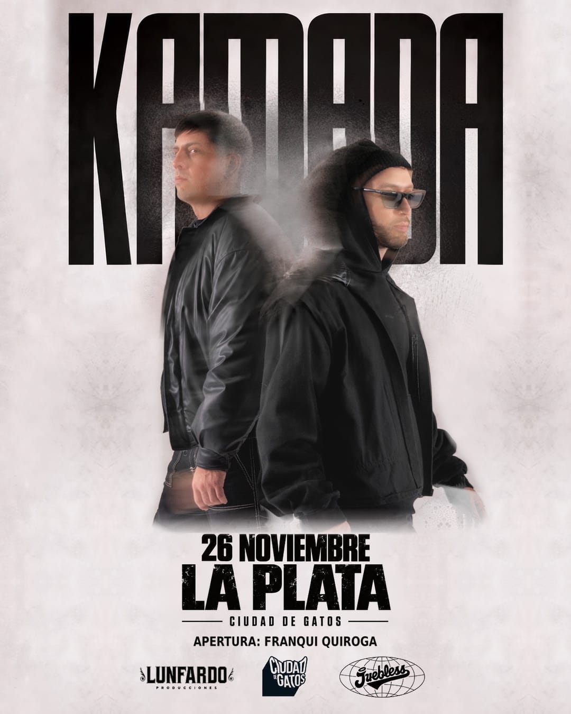

Fechas destacadas
Referentes del Hip Hop en La Plata
Dos fechas de este año que muestran el nivel de producción y el público que convoca cada encuentro.

24 de septiembre · Ciudad de GatosRealizada
Rxnde Akozta junto a DJ Destroy
Por primera vez en La Plata. Cinco invitados especiales, dos DJ sets y expo de feriantes con La Plata Sport.

26 de noviembre · Ciudad de GatosPróxima fecha
Kamada
Con apertura de Franqui Quiroga. Producción junto a Lunfardo Producciones y Ciudad de Gatos.